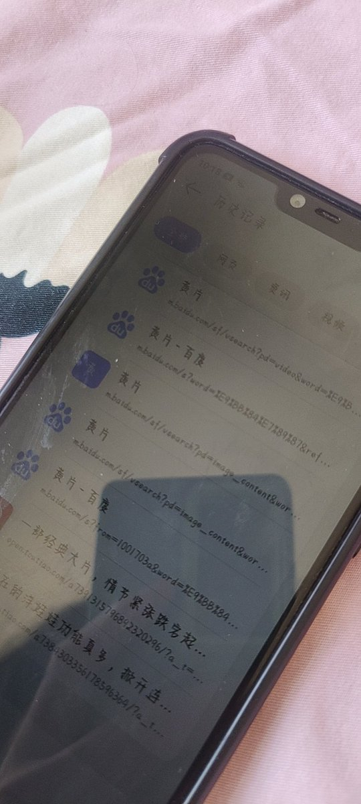
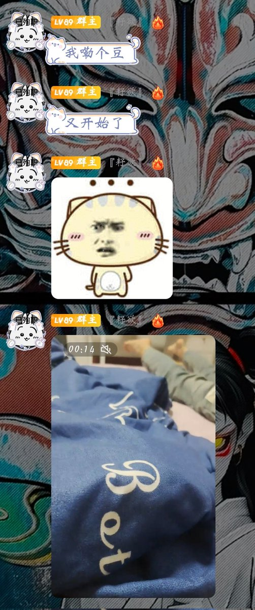
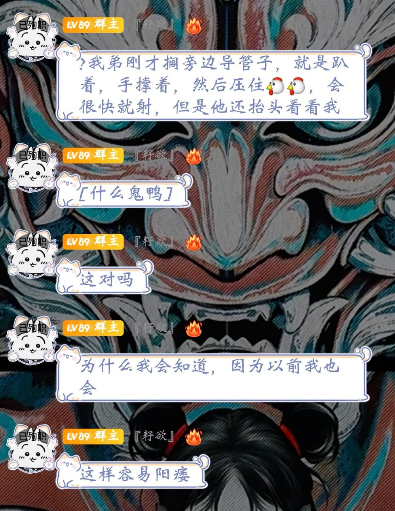

Minokakay
@Minokakay
RT @ziyubushiziyu: 不是哥们，周二的时候我趁我弟不在，手机还开着顺手看了一下浏览记录，我就觉得不对然后也没管，这踏马今天，这什么事啊?他他妈的才七八岁啊??这对吗??????导就导抬头看我干鸡毛??



耔欲
@ziyubushiziyu
不是哥们，周二的时候我趁我弟不在，手机还开着顺手看了一下浏览记录，我就觉得不对然后也没管，这踏马今天，这什么事啊?他他妈的才七八岁啊??这对吗??????导就导抬头看我干鸡毛?? https://t.co/gmcZd4fL6y